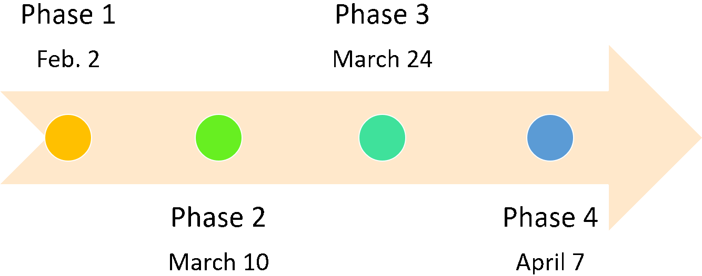

VRmagination
Mahdi Davoodikakhki
Professor Steve DiPaola
Introduction
This project is about making an interactive 3D scene generation program. It aims to create 3D scenes and environments in Virtual Reality(VR) platforms. In this project, we tend to get the user voice input and use a speech recognition system to convert the user speech to text. We then use some techniques and deep neural network models from Natural Language Processing (NLP) to convert the user input to a 3D scene.
The final output of this project can be used for visualizing people imagination. People can see their idea in a 3D environment and then investigate it in a 3D virtual world using a VR headset.
We have defined four phases to complete this project. In the first phase, we detect some keywords linked to certain models and instantiate the requested models where the user asks for them. In the second one, We should try to get the whole sentences from users and understand and build the semantic graphs coming from the users. In the third one, we add an intelligent system hearing the user's complicated commands, users would be able to ask for some changes, such as changing the scale, rotation, color, and position of objects. In the last phase, we first make a rather big dataset of 3D models, and then with updating the system from the previous phase, users can ask for some different types of the instantiated models.
Project Description
We implement our project in the Unity Game Engine environment and use the provided API and Unity Asset from Facebook Oculus. Users can move freely in this environment and explore the scene. Users can select or specify instantiation position by using the handset in their hands. They can also send their commands to the game by talking and giving instructions about the objects and their relations.
Users' instructions include instantiating simple or multiple objects by describing their position and situation regarding each other, modifying them, or even changing the instantiated objects based on their wishes. In case the four phases could be completed faster, we plan to add physics and add some simulated moving commands for the movable objects, such as vehicles and people. We may also be able to transfer our project to Tivoli VR as well.
Key Features
The key feature in our project is having a big and wide set of 3D models to give suitable freedom to the users for choosing models and design scenes as they wish. We mainly focus on using free assets from the Unity Asset Store, but we may also use some other models from Google Poly or Free 3D model provider websites. We have added a link to the models we have used from the Unity asset store in the References and we will update them over time [1,2,3,4,5,6,7,8,9]. To understand the user's input we may also use our designed sentence embedder, Bert-sentence, or GPT-3 models. For now, we plan to use the Bert-sentence embedder.
Our project's user experience can be enhanced by adding physics to our scene and make the vehicles or even characters move in the environment. This makes our simple game more interesting, especially for kids. We can also add some special sounds to the objects in our environment to make them more believable and give a better experience to the users. Besides, adding sounds to our game especially to the vehicles is another possible improvement for our project.
Genre
Our project is actually a game, but it is just a casual and entertaining game without any goal or objectives, and also it does not have any story or narration.
Concept Art
As mentioned previously, our game does not have a storyline or a particular level design. In the beginning, users will see a wide brown colored plane representing a terrain covered with soul. As we are creating this project for Oculus Quest 2 for now, We add a ray at the end of the right handset, so that the user can select the point he wants to instantiate a model or they can select or point to an instantiated object to modify or replace it with another object.
Timeline
Our project has four phases. The first phase is already finished on February 2. For the second phase, for now, we have used Microsoft's Windows dictation speech recognition [] and a model that can split sentences with some pre-defined words, which is implemented by us, but it still needs some improvements and debugging. The second step, which is just defining a simple scene should be finished until March 10, and the third and fourth steps should be finished until March 24 and April 7. Videos showing the implemented phases and what we expect from the next phases are provided in the Sketches and Idea section
Project timeline for the defined four phases.
Team Members and Roles
The team for doing this project has just one student, named Mahdi Davoodikakhki, and he gets guidelines from Professor DiPaola, who is the course instructor and his supervisor. Therefore, Mahdi is the responsible person for implementing the codes, design, writing reports, defining timelines, and other roles.
Implementing the Project
In this project, we split the user input sentence with some positional words, such as right, front, etc. Then for each splitted chunk of our sentences, we will try to find the nearest sentence to one of the pre-defined sentences. These pre-defined sentences are the description of each of our models. With having the most probable requested models, we will instantiate the requested models, but we have to understand the positional relationships between the sentences to place them correctly in our 3D scene. We should also define some Vectors or other meaningful representations of these positional words to translate them into 3D world meanings.
After adding the ability to instantiate models and creating 3D scenes, we will aim to add the ability for modifying the scene, such as changing the models' scale, moving, or rotating them. In the next phase, users may also ask for some other models to be replaced by the current instantiated model. To do that, we have to understand what is the exact model or object that the user is talking about and then we should consider adding the most known and usable modifications to our scene gradually.
We have two suitable software for implementing this project. The first one is the Unity game engine, which has proper documentation and also a great asset store that can help us with finding the 3D models for implementing the project. The second solution is using Tivoli Cloud VR software. It seems to be an easier solution overall but for now, its documentation is not very clear as it is a rather new platform and it does not have a dataset of 3D models, but it can easily gather people in an interactive environment, which is a quite worthy advantage for using that. We have gone forward with Unity for now, but as mentioned previously, we may also bring our project to the Tivoli VR to use its predesigned advantages such as having multiple people in the same room that can add objects or interact with them especially because they have kindly provided some tutorials for getting started with coding in their environment.
Sketches and ideas
Here, we show a few sketches from the possible outcome of each phase. Please note that the first step is done, while the second step is partially implemented. The sketches for the last three phases are created manually.
The current output of the first step.

First step output after asking to instantiate car, house, helicopter, and police car by pointing with handset.

Second step scene similar to the first step scene. Showing the output after saying "put two cars left to a helicopter and next to a house".

Third step output after saying "rotate the car 90 degrees."

Fourth step output after saying "replace the car with a small cartoon car".